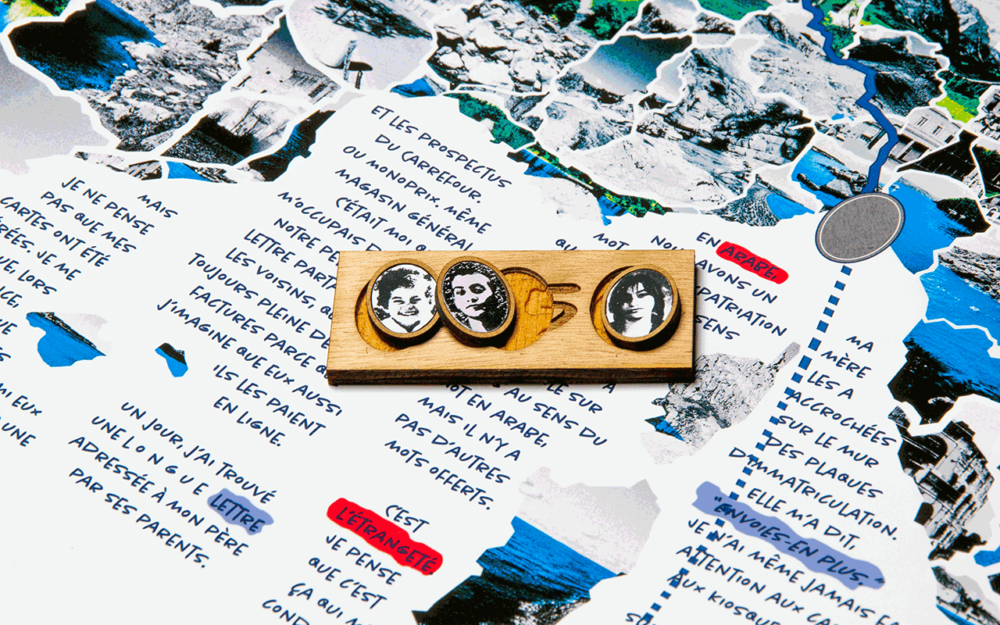
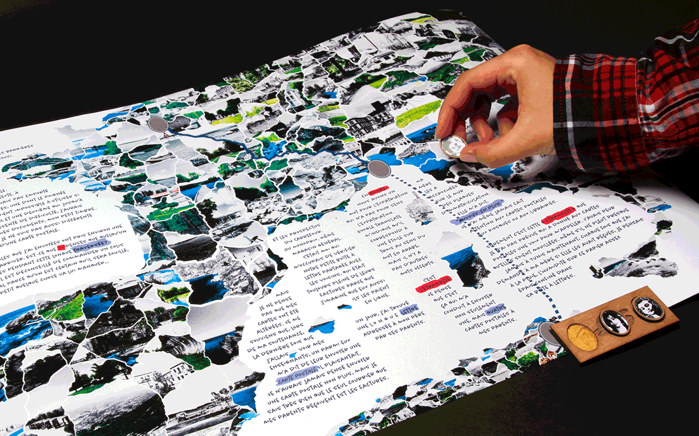
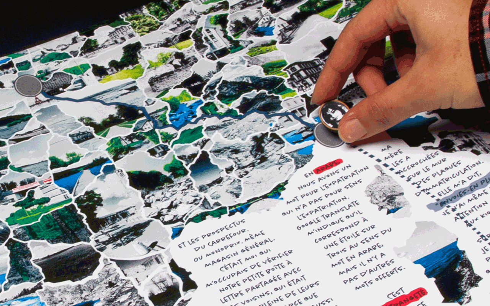
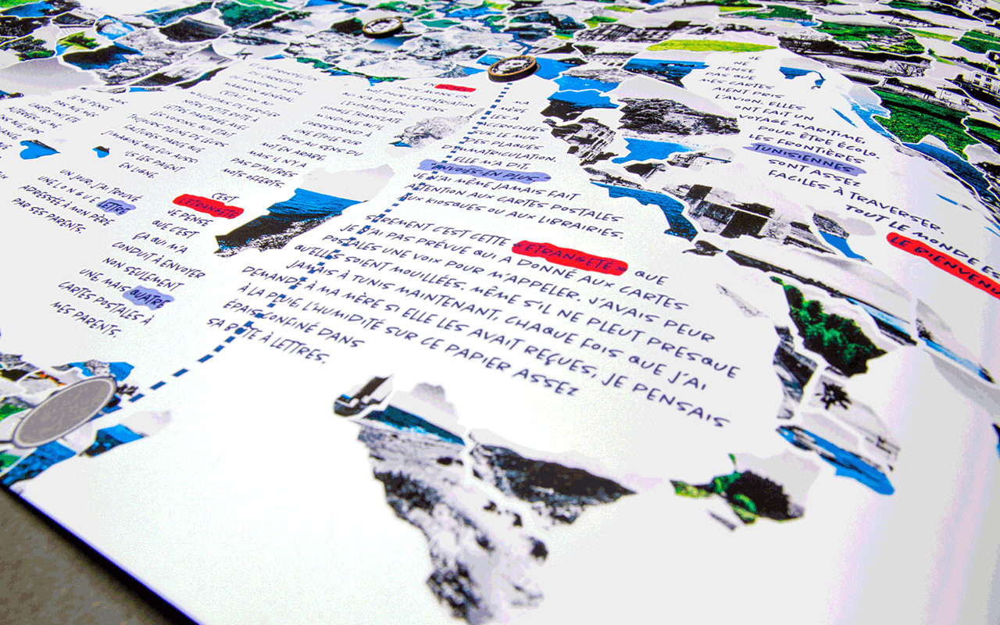

Conçu pour : Projet scolaire
La traversée est un voyage à travers le temps, les lieux et les générations. J'ai décidé d'interpréter le texte que j'avais écrit de manière satirique, en choisissant de créer une carte interactive en réalité augmentée qui permettrait à l'utilisateur de voyager à travers les continents de manière ludique.
Chaque pion, représentant une phase de la vie du personnage, déclenche une animation différente au point de contrôle indiqué.
Comment choisir la bonne iconographie, les couleurs et les images pour véhiculer la satire ?
Outils : Adobe Photoshop, Adobe Illustrator, Adobe Indesign, Unity
Vous pouvez PANNER et ZOOMER sur l'image si-dessous avec le SCROLL.
À propos
1€50, la traversée
5 Colonnes 8 cases
Identité visuelle de la GG&M
Lisatoys
Who is the virus?
Costumes
Dernière mode
1€50 La traversée




×>
×